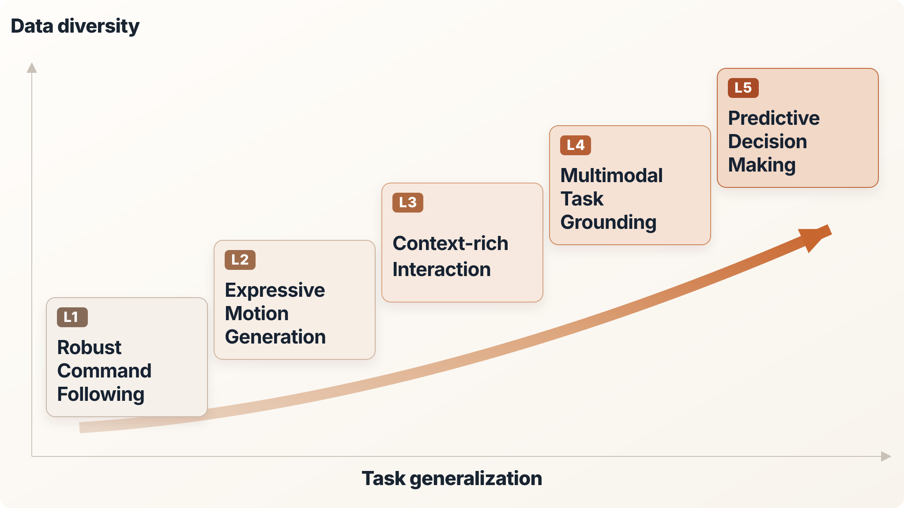

Self-made Tutorial: Evolution of Learning Based Humanoid Whole-body Control
Learning-based humanoid control has evolved from reward-defined task learning toward open-world generalist control as data priors become increasingly diverse and expressive. As summarized in Fig. 1, this progression moves from self-generated simulation rollouts to expressive motion imitation, real world interaction, multimodal reasoning, and predictive world understanding, enabling a gradual shift from command following toward general motion, physical interaction, semantic grounding, and future-aware decision making.


Literature landscape of learning-based humanoid whole-body control. Studies cited throughout this chapter are organized by their dominant role in the progression from robust command following to predictive world–action models; several works naturally span multiple paradigms.
| Paradigm | Illustration | Representative works |
|---|---|---|
| L1Robust command following |

|
Real-World Humanoid Locomotion; 15-min Sim2Real Humanoid Locomotion; Humanoid Parkour; BeamDojo; Learning Humanoid Locomotion over Challenging Terrain; Learning Perceptive Humanoid Locomotion; Humanoid-Gym; Booster Gym; FastTD3; FlashSAC; PPO; ASAP; HOVER; FALCON; Memory-Based Bipedal Control; Rapid Motor Adaptation for Bipeds; Perceptive Internal Model. |
| L2Expressive whole body motion |

|
AMASS; CMU MoCap; SFU MoCap; HumanPlus; H2O; OmniH2O; TWIST; TWIST2; RoboMirror; Retargeting Matters; Human2Humanoid; DeepMimic; HiLo; UniTracker; GMT; Adaptive Motion Tracking; KungfuBot; KungfuBot2; Expressive WBC; SONIC; Humanoid-GPT; AMP; NEAR; SMP; CMP; ADP; ASE; C·ASE; Universal Humanoid Motion Representations; Hybrid Motion Priors; Latent-Conditioned Loco-Manipulation; ExBody2; HoRD; VIRAL; From Experts to a Generalist; EAGLE; X-Loco; BeyondMimic; DAgger. |
| L3Context-rich Interaction |

|
VideoMimic; HDMI; OKAMI; EgoHumanoid; Humanoid Manipulation Interface; Mobile-TeleVision; DemoHLM; OASIS; SIMPLE; HumanoidMimicGen; InterMimic; InterReal; ContactMimic; SceneBot; WoCoCo; ResMimic; InterPrior. |
| L4Multimodal task grounding |

|
RT-2; π0; OpenVLA; WholeBodyVLA; GR00T N1; Ψ0; OpenHLM; Being-0; MetaWorld-X; Humanoid Policy ∼ Human Policy; Behavior Foundation Model; Scaling Behavior Foundation Model; Meta Motivo; TextOp; LeVERB; Commanding Humanoid by Free-form Language; TANGO; SENTINEL; LangWBC; ULTRA. |
| L5Predictive decision making |

|
DreamDojo; UniT; DreamZero; World Action Planner; ω-0; MotionWAM; WholeBodyWAM (WBC-Grounded); WholeBodyWAM (Motion Priors). |
Summary of learning paradigms for humanoid whole-body control along increasing data diversity and task generalization. The listed years indicate the approximate emergence of each paradigm in humanoid control rather than the first appearance of the underlying techniques.
| Category | Main methods | Core ideas | Year |
|---|---|---|---|
| L1Reward-defined reactive control | On-policy and (emerging) off-policy RL; massively parallel simulation, curriculum and privileged learning, and sim-to-real adaptation | Learn task-specific feedback policies from self-generated interaction. Low-dimensional commands and hand-designed rewards specify success, while simulation provides scalable experience for robust closed-loop control. | 2016– |
| L2Motion-conditioned control | Reference collection; motion retargeting; RL grounding; policy distillation | Use external human or robot motion data to specify desired behavior. Retargeting bridges embodiment gaps, while RL grounds reference trajectories, motion distributions, or latent motor priors in dynamically feasible closed-loop control. | 2018– |
| L3Context-grounded physical interaction | Demonstration collection; context-rich alignment; interaction-aware physical grounding | Extend supervision from body motion to body–world relations by preserving object, scene, and contact context. The policy must realize both plausible whole-body motion and the intended physical interaction. | 2024– |
| L4Multimodal generalist control | Multimodal inference; robust real-world execution; skill, motion-latent, or direct-action coupling | Infer open-ended task intent from vision and language input, and then couple robust executor to enable physics-grounded whole-body execution. Multimodal models specify what to do, while behavior foundation models preserve robust high-rate control. | 2025– |
| L5Predictive world–action models | Predictive experience modeling; action-conditioned foresight and planning; prediction–execution coupling | Model how candidate actions change future observations, states, or latent world representations, adding explicit action-conditioned foresight. Prediction can guide a separate robust executor or be learned jointly with action generation. | 2026– |
L1 · Robust Command Following
Learn task-specific feedback policies from self-generated interaction. Low-dimensional commands and hand-designed rewards specify success, while simulation provides scalable experience for robust closed-loop control.
L2 · Expressive Whole Body Motion
Use external human or robot motion data to specify desired behavior. Retargeting bridges embodiment gaps, while RL grounds reference trajectories, motion distributions, or latent motor priors in dynamically feasible closed-loop control.
L3 · Context-rich Interaction
Extend supervision from body motion to body–world relations by preserving object, scene, and contact context. The policy must realize both plausible whole-body motion and the intended physical interaction.
L4 · Multimodal task grounding
Infer open-ended task intent from vision and language input, and then couple robust executor to enable physics-grounded whole-body execution. Multimodal models specify what to do, while behavior foundation models preserve robust high-rate control.
L5 · Predictive Decision Making
Model how candidate actions change future observations, states, or latent world representations, adding explicit action-conditioned foresight. Prediction can guide a separate robust executor or be learned jointly with action generation.